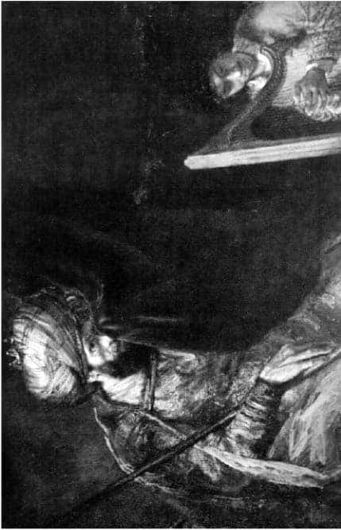
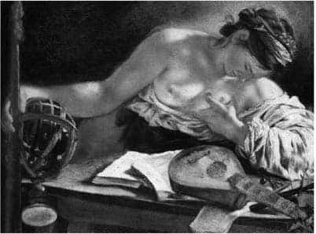
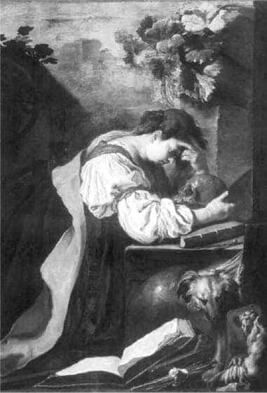
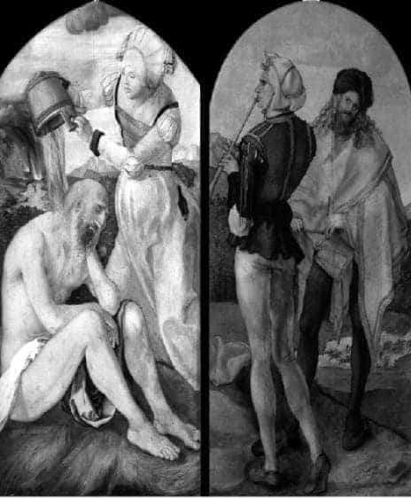
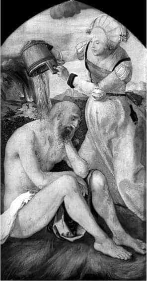
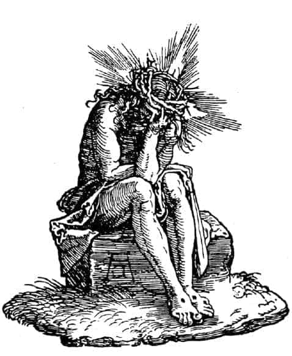
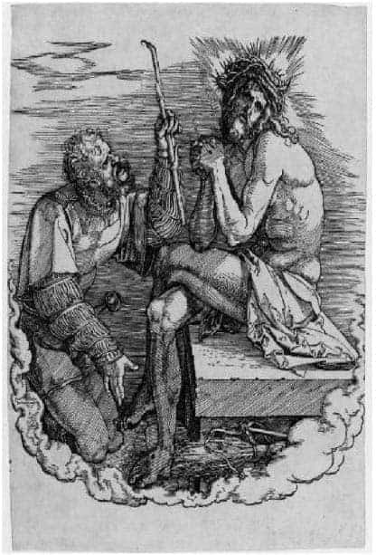

3.4. MELANKOLİ-MÜZİK İLİŞKİSİ
I.
Melankoli ile müzik arasındaki etkileşim konusunda, antikçağ sonrası düşün ve sanat dünyasını belirleyen temel kaynağı, Tevrat’ta, Samuel’in kitabındaki, Saul ile David arasındaki ilişkiler bölümü oluşturmuştur. Burada, melankolik bir insanla bir müzisyen arasındaki ilişkiler, din kitabı kapsamı içinde, sayfalar boyu, olanca açıklığıyla anlatılmıştır:
“Rabbin ruhu Saul’den ayrıldı ve Rab tarafından kötü bir ruh onu üzüyordu. Saul’ün kulları kendisine dediler: İşte şimdi Allah tarafından kötü bir ruh seni üzüyor. Efendimiz, karşısında olan kullarına emretsin, iyi harb (çenk) çalan bir adam arasınlar ve vaki olacak ki Allah tarafından senin üzerine kötü ruh geldiği zaman elile çalar ve sen iyi olursun. Ve Saul, şimdi benim için iyi çalabilen bir adam hazırlayın ve bana getirin dedi. Ve vaki oldu ki, Allah tarafından Saul’e kötü ruh geldiği zaman Davud harb çalardı ve Saul dinlerdi ve iyi olurdu ve kötü ruh kendisinden ayrılırdı... Ve ertesi gün Allah tarafından Saul’ün üzerine kötü bir ruh kuvvetle geldi, Davud her gün yaptığı gibi elile harb çalıyordu. Ve Saul’ün elinde mızrak vardı ve Saul, Davud’u duvara çakayım diye mızrağı attı. Fakat Davud onun önünden iki kere yana çekildi. Ve Saul Davud’dan korktu, çünkü Rab onunla beraberdi”.1
Saul’deki melankolik durum burada görüldüğü gibi zaman zaman hezeyanlı boyutlara varır. Defalarca, Davud’u öldürmek ister. Davud, Saul’ün oğlu Yonatan’ın da öğütlerine uyar ve görece dingin davranır; harb çalmayı sürdürür, Saul’ü sakinleştirir...

Rembrandt (1606-1669) Saul ve Davud, Mauritshuis Müzesi, Lahey.
Samuel’in kitabında, müziğin sihirli etkisi sergilenir.
Müzik, ruhsal huzursuzlukları ortadan kaldırır, kötü ruhları, cinleri kovar. Ruhu yeniden dinginliğine kavuşturur.
Saul’ün zaman zaman tanrının gönderdiği kötü ruhların etkisiyle melankolik ruhsal duruma girişi, Davud’un müzik çalarak onu iyileştirişi, Hıristiyan dünyasında, 4. yüzyıldan beri çeşitli sanat yapıtlarında anlatılagelmiştir. Rönesans ve sonrası dönemlerde, pek çok ressam Saul-Davud konusunu resimlemişler, büyük boyutlu yapıtlar ortaya koymuşlardır. Örneğin, Rembrandt’ın (Müzik Sahnesi-Den Haag) yapıtı hemen ilk akla gelenlerden biri olabilir.
Marcilio Ficino, ünlü De Vita Triplici adlı yapıtında (1. Kitap, 5. ve 9. Bölüm) melankoli ile müzik arasındaki ilişkilerin gene bir tarihsel dökümünü verir. Platon ile Pythagoras’ın hüzünlü oldukları zamanlar gitar eşliğinde şarkı dinlediklerini, Saul’ün, Davud’dan harb dinleyerek melankolisinin acısını hafifletmeye çalıştığını, Galenus’un bu konuda kapsamlı öğütler verdiğini, Augustinus’un ruhunun acılarını dindirmek için müziğin yardım edici etkisine sığındığını, Afrikalı Konstantinus’un melankolide müziğin tedavi edici yardımını vurguladığını anımsatır... Ve kendisinin de “güzel müzik dinleyerek acılı melankolisini tatlılandırdığını” söyler. Ve bu yöntemi herkese salık verir...
Ficino’ya göre, melankolikler yeni bir soluğa “spiritus”a gereksinim duyarlar. Müzik, melankoliklerin yitirdiği bu soluğu getirir. Müziğin titreşimleriyle tinselleşen, yücelen hava yeni bir niteliğe dönüşür. İnsana yeni uyarımlar verir. Müziğin titreşimleriyle değişen hava, bedeni, aklı, heyecanları, tüm ruhu etkiler... Tinsel/ruhsal yenilenme olur... Ficino, müziğin bu etkisini sürekli kılmak için kendisi (de) rebap çalmış. Ayrıca bu tür bir çalgıyı tüm melankoliklere önermiştir.
Daha önceki bölümlerde de anımsatıldığı gibi, antikçağdan beri müziğin, ruh ile madde, mikrokozmos ile makrokozmos arasındaki harmoniyi sağladığı öngörülmüştür. Platon, insan sağlığının bedensel ve ruhsal öğelerin harmonisi olduğunu, kara safra (melankoli) yoluyla bu harmoninin bozulduğunu, müziğin bu harmoniyi yeniden düzenlediğini vurgulamıştır. Platon’un Devlet’inde gençlerin çok iyi müzik eğitimi görmeleri öngörülmüş; ancak bu tür bir eğitimden geçmiş gençlerin bilge olabilecekleri düşünülmüştür.2
Gene antikçağ ve ortaçağ düşün dünyasında, müziğin bedenin tıkanan hava yollarını açarak ruhun havalanmasına yardım ettiği ve bu açılan yollardan cinlerin ve kötü ruhların uçup gittiklerine inanılmıştır. Ayrıca ilaçların bedeni, müziğin ise ruhu sağalttığı varsayılmış, müziksiz bilimin eksik olacağı, en doğru bilimsel çalışmaların bile ancak müziğin yardımıyla tamamlanıp, kusursuzlaşacağı öngörülmüştür.
Tevrat, antikçağın bu genel düşüncesini Saul-Davud ilişkisinde sürdürmüştür. Tüm ortaçağ yazınında ve sanatında, hüzünlenmenin ve melankolinin kötü ruhların ve şeytanın etkisinde ortaya çıktığı, buna karşın tanrısal müziğin bu olumsuz etkileri ortadan kaldırdığı söylenmiştir. Ancak burada tanrıya çok yakın biri olan Saul’e, gene tanrının neden kötü ruhları gönderdiği, onu melankolik yaptığı, bir türlü açıklanmamıştır.3 Bu gizi irdelemeye yönelik sorulara yanıt arayan pek çok bilge, insanların bir kısmının dünyasal eşitsizliklerden sıkıldıkları için hüzünlendiğine değinmiş ve “kardeşimiz Saul’de de bu tür bir durumun olduğu, Saul’ün, şeytanın etkisiyle değil, tanrıya yakın olmanın verdiği heyecanla hüzünlendiği”ni söylemiştir. Ayrıca ortaçağ inancına göre de “tanrının kendisini düşünmeleri için insanların kalplerini hüzünle doldurduğu” söylenmiştir.4

Giovanni Serodine (1594-1631), Hüzünlü Baccantin, Melankoli, Milano.
Oysa durum hiç de din adamlarının ve din kitaplarının anlattıkları gibi değildir. Ve Kral Saul’ün (MÖ 1025-1000 ?) serüveni, melankolinin oluşumu üzerine bizlere son derece önemli ipuçları verir. Saul, varlıklı bir köylünün oğludur. Güzel ve güçlü bir insandır. Samuel, birgün kendisini evine konuk eder ve tanrının emriyle İsrailoğulları’nın kralı ve ordu komutanı olacağını söyler. Saul, böyle bir görev için hazır olmadığı yanıtını verir. Fakat kabul ettiremez. Bunun tanrısal bir buyruk olduğu söylenir. Samuel hep arka planda durur ve Saul’e, tanrının isteği üzerine düşmanları Amalekiterler’e saldıracaklarını söyler. Çok barbarca bir saldırı olur. Salt askerler ve erkekler değil, kadınlar, çocuklar, hayvanlar bile öldürülür. Bu saldırı yazılı tarihte bilinen ilk soykırım denemesidir. Tüm ekinler, bitkiler yakılır. Saul, bu acıyı bir türlü içine sindiremez... Tanrıya, bu saldırıya ne gerek olduğunu sorar... Fakat yanıt alamaz... Saul burada din ile ahlak arasındaki büyük trajik ikilemli sürtüşmeyi yaşamaya başlar... Tanrıya soru sorması, itaatsizlik ve kuşku olarak yorumlanır. Tanrı tarafından Saul’ün üzerine kötü ruh gönderilir ve melankolik acılara boğulur. İtaatkâr olmadığı için kurban olur. Saul, itaatsizlik ve günahkârlıkla tanımlanır ve melankoliyle cezanlandırılır. Saul, tanrı ve diğer insanlar tarafından terk edilir. Neler olup bittiğinin ayırdına varamaz. Durumunu sormak için Saul’e yanlızca Endor’lu bilici bir kadın/cadı, tanrının ve kralın (Saul’ün bizzat kendisinin koyduğu) biliciliği yasaklayan yasalarına karşın, kendi yaşamını riske ederek, çaresiz kalmış Saul’e yardım eder. Tanrının artık kendisine yardım etmeyeceğini söyler. Saul, düşmanlarının eline geçme korkusu içinde kendi kılıcını karnına sokup intihar eder...

Domecio Fetti (1589-1624), Melankoli, Louvre Müzesi, Paris.
Georg Friedrich Händel (1685-1759), 1738 tarihinde Saul Oratoryosu’nu bestelemiştir. Ancak burada da Saul’ün melankolisinin nedeni olarak onun, David’e karşı duyduğu kıskançlık ön plana çıkarılmıştır. Melankolinin nedeninin bu denli yanlış yorumu sonucu, bu büyük müzik yapıtının bile Saul’ün acılarını dindirmeye yetip yetmediğini kestirmenin zor olduğunu düşünüyorum.
1482 yılında İspanyol, Ramos De Pareja’nın Musica Pratica yapıtı yayımlanmış, burada tonlar, kişilikler ve gezegenler arası ilişkilere değinilmiştir. Örneğin, tonus protus, phlegmatik kişilikler ile Ay; tonus deuterus, safranın ağır bastığı kişiliklerle Mars gezegeni; tonus tritus, kanın etkin olduğu kişiliklerle Jupiter gezegeni; tonus tetartus, melankolikler ile Satürn gezegeni arasındaki ilişkileri düzenlediği söz konusu edilmiştir.5
Kilise, eskiden beri müziğin gizemli gücünü görmüş; müziğe ve müzisyenlere karşı çekingen ve biraz kuşkuyla bakmıştır. Bu nedenle olacak, örneğin Saul ile Davut ilişkisini yansıtan yapıtlarda her ikisi de birlikte görünmelerine karşın, Saul’e öncelik verilmiştir. Saul, genellikle orta mekânda yer almış, buna karşın Davut geri planda tutulmuş ve yandan gösterilmiştir. Sonraki dönemlerde, müzisyenlerin toplumsal yaşamda kendilerini saraylarda kanıtlamaya başlamalarından sonra Davut da bir tür saray müzisyeni olarak ortaya çıkmış, toplumdaki ve saraydaki konumu yükselmiş. Davut’un kendisine ve sanatına güveni artmıştır. Davut artık görkemli giysiler içinde ve yapıtın görece görünür yerlerinden birinde bulunmaya başlamıştır.
Resim sanatında, Saul ile Davut ilişikisi dışında, melankoli ve müzik, “büyük günah” ve “arınma” konularını çeşitli biçimlerde işleyen pek çok değişik yapıt anımsanır... Bu yapıtlarda, genellikle, melankolik yüz ifadesiyle, yarı çıplak, güzel kadın, kendisine “mutlu bir son” arayışı içindedir. Bunun için, salt güzellik ve varsıllık yetmez... Bulunulan mekâna, kitaplar, notalar, müzik aletleri, kafatası, kum saati gibi pek çok şey dağılmıştır. Bu görünümler, Dürer’in, Melencholia I’deki karmaşık mekânı anımsatırlar... Burada, “Kutsal Günahkâr”, kendi kendisiyle hesaplaşarak –aynayla ruhunun derinliklerindeki duyguları dışarı yansıtıp, bir tür günah çıkararak– kutsal kitapları okuyarak ve müzik çalarak arınıp erdemli bir sona ulaşabilir...6
Müziğin etkisiyle göksel kusursuz harmoninin yeryüzünde de yaratılabileceğine, böylece de sonsuz düzenin müzik aracılığıyla içselleşeceğine inanılmıştır. Bu bir anlamda, Orpheus ile Apollon bütünleşmesi olarak düşlenmiştir. Ancak burada, salt müzik ve sağlığın bütünleşmesi söz konusu edilmemekte, bundan öte, bu birleşmeden –artık– geleceği görebilen kâhinlerin, bilicilerin ortaya çıkabileceği varsayılmaktadır. Orpheus ile Apollon bütünleşmesine benzer konuma gelen arınmış insanların, öldükten sonra Hades’e gitmedikleri, gökyüzüne yakın bir ara bölgede –gökyüzüne gitmek için– beklediklerine inanılmıştır. Gene antik inanca göre müziğin anlayana, “aklın ışığından göksel hakikati sezinleme” olanağını verebileceği düşünülmüştür.7
Fakat gene antikçağdan beri insanlardaki “çelişkili duyguların birliğine” uygun olarak, müziğin de insanlardaki etkisinin değişik olabileceği düşünülmüş. Ayrıca melankoli ya da melankoliye eğilim, insan ruhunun tümüyle felç olduğu bir evreyi değil, tersine etkin ve kimi yeteneklerin arttığı, hatta –negatif boyutlarda da olsa– insanın coşkulu (ekstase) olduğu dönemleri kapsadığı varsayılmıştır. Bu koşullarda müziğin etkisinin de çelişkili, hatta zıtlıklarla dolu olabileceğine inanılmıştır. Bu durumlarda, müziğin gücü, sirenlerin etkisiyle karşılaştırılmış. Sirenler gibi müziğin de pek çok başı dertte kalmış insana, hem yol gösterebildiği hem de onları canından edebildiği öngörülmüştür.
Antikçağdan beri müziğin hem geleneği pekiştirdiği hem de insanı gelenek dışına çıkmaya kışkırttığı; harmonik ritimlerin, duyarlı dokuları, “karışımı” titreştirdiği, sağlıklı görülen insanlarda –bile– melankolik belirtiler ortaya çıkardığı söylenmiştir...
Kanıya göre müzik, insani duygularda hem harmoniyi güçlendirmekte hem de gizil güçleri tüm dizginlerinden boşanmaya itelemektedir... Müzik, salt göksel ve tinsel değil, aynı zamanda dünyasal, bedensel ve tensel hazları da telkin edebilmektedir... Müziğin etkisindeki insan, içinde bulunduğu öznel ve nesnel koşullara göre salt bilici değil, büyücü de olabilmektedir.
Bu bağlam içinde müziğin, melankoliyi salt iyileştirmekle kalmayıp, aynı zamanda kimi insandaki gizil melankolik yetenekleri ve eğilimleri de ortaya çıkarabileceği düşünülmüş ve “tatlı bir müziğin, insana tatlı bir melankoli yaşatabileceği” öngörülmüştür. Ficino’nun dediği gibi, müzik sadece “acı melankoliği tatlandırmaz”, ayrıca tatlı melankolik duygular da uyandırabilir...
17. yüzyılın İngiltere’sinde yaygın bir moda olarak özellikle romantik aydınlar, yazarlar arasında, müzik yoluyla “sweetest melancholly” oluşturmanın (ortaya çıkarmanın) yolları aranmış, buna uygun müzik lokalleri açılmıştır. Bu yollardan insanlarda melankolik duygular üzerinden haz, coşku (ekstase) uyandırılmaya çalışılmıştır. Kuşkusuz, burada sorun insanları hastalandırmak değil, coşku içinde arınmalarını sağlamak olmuştur. Bunun için, acılı-haz yaşantısı –haz dolu acı ya da tersi, acılı haz– oluşturulmaya çalışılmıştır.9
Lucas Cranach’ın 1533 tarihinde yaptığı Melancholie yapıtında da müziğin, insanlar-çocuklar üzerine olan değişik etkileri sergilenmiştir. Bu çok kapsamlı yapıtın sol kenarında, çok güzel ve oldukça “dünyevi” bir melankolik kadının yanında iki müzisyen görülür. Bunların önünde, on üç çocuğun müziğe karşı gösterdikleri değişik tepkiler izlenebilir. Bunlardan beş tanesi dans eder; iki tanesi oturmuş etrafına bakınmaktadır; bir tanesi ayaktadır ama henüz ne yapacağına karar verememiştir... Müzisyenlere en yakın dört tanesi yere yatmışlar, uyumaktadırlar; diğerleri ise uyku ile uyanıklık arasındadırlar.10 Müzik, bu çocukların her birinde ayrı ruhsal durumlar ortaya çıkarmıştır.
II.
Rönesansın başlamasıyla birlikte artık kutsal kitaplarda yazılan serüvenlere ciddi kuşkularla bakılmaya başlanmıştır. Büyük sanatkârlar, bu tür olayları 1500 yıllarının görece özgür ortamına uygun eleştirel yaklaşımlarla yeniden yorumlamışlardır. Örneğin Michelangelo, ünlü Pieta’sında, artık Meryem ile İsa arasındaki bütünlüğü kutsal ana-oğul ilişkisi olmanın ötesinde, sıradan iki genç sevgili olarak yorumlayıp anıtlaştırmıştır. Leonardo, Milano’daki küçük Santa Maria Kilisesi’nin duvarına yaptığı Son Akşam Yemeği çalışmasında, alışılagelindiği gibi, İsa’nın havarilerini kutsayışını göstermemiştir. Bu tür, hep “mutlu sonla” biten söylenceler dönemi geçmiştir artık. Leonardo, bunu en iyi bilenlerden biridir. Bu nedenle de Leonardo, Son Akşam Yemeği’nde, İsa’nın havarilerine, “içinizden biri bana ihanet edecek,” dediği anda, İsa’nın ve havarilerinin yüz-ruh-beden ifadelerini yansıtmaya özen göstermiştir.11

Albrecht Dürer, Eyüp ve Müzisyenler.

Albrecht Dürer, Eyüp, Frankfurt
Dürer’in, 1503-1504 yılları arasında Jabach Altarı için yaptığı Eyüp çalışması ile 1511 yılında yaptığı Acı Çeken Adam ve Passion çalışması pek çok tartışmalara neden olmuştur. Hıristiyan dinbilimlerinde İsa tiplemesi, yaşam tarzı, öldürülmesi ve ardından gelenleri etkileme gücüyle, Sokrates’e öykünülerek geliştirilmiştir. Fakat Sokrates’in ateist görüşleri, insanların bireysel özgürlüklerini, bir din önderi için gereğinden fazla savunması ve özellikle de eşcinsel ilişkileri, Hıristiyan sanatında Sokrates betimlemelerinden kaçınılmasına neden olmuştur. Özellikle Rönesans öncesi dönemlerde, başta Augustinus olmak üzere, pek çok Kilise Babası, Sokrates’ten uzak durulmasını önermişlerdir. Fakat Floransa hümanistleri, Rönesans dönemiyle birlikte Sokrates’in yaşam tarzına, eleştirel tavırlarına, insan özgürlüklerine yaklaşımına çok daha sıcak bakmaya başlamışlardır.12
Dürer’in Jabach Altarı’nın konusunu Nürnbergli hümanistlerle tartışırken, Eyüp-Sokrates yakınlaşmasını düşündükleri kuvvetle olasıdır. Bu, öncelikle Eyüp’ün başkaldırısını vurgulamak için bir önkoşul olmuştur. Ayrıca o yıllarda çok okunan, Diogenes Laertius’un Ünlü Filozofların Yaşamları ve Düşünceleri kitabında13 Sokrates’in karısı Xanthippe ile olan sorunları, Eyüp’ün karısı Rahma14 ile olan farklılıkları için de örnek oluşturabildiği düşünülmektedir. Fakat burada, kanımca asıl Dürer’in kendi karısı Agnes Frey ile olan ilişkileri, yapıtın, kompozisyonun oluşmasında etkide bulunmuş olabilir.
Sonuçta, Jabach Altarı’nda görülen Eyüp’e ve karısıyla ilişkisine, bir Sokrates-Eyüp, İsa ve Dürer bütünlüğü içinde bakılabilir.
Bu ısmarlanmış çalışmanın ancak iki bölümü yapılabilmiş, bütünü tamamlanmadan kalmıştır. Tamamlanmama nedeni kesinlikle bilinmemektedir. Bir olasılık, siparişi veren kilise yetkililerinin yapılan iki bölümü gördükten sonra, kuşkuya düşüp öneriden vazgeçmeleridir. Diğer bir olasılık, tam da o yıllarda Nürnberg’de çıkan veba salgını ve Dürer’in, bu salgını da fırsat bilerek, düşlediği ikinci İtalya gezisine çıkması ve 18 ay kadar Nürnberg’den uzaklarda kalmış olması düşünülebilir.15
Jabach Altarı’nın tamamlanan iki bölümünden birinde, yaşamöyküsünü din kitaplarından bildiğimiz Eyüp yere oturmuş, acılar içinde kıvranırken görülür. Eyüp’ün görünümü, hiç de dinsel söylencelerde anlatılan, tanrının her verdiğine ses çıkarmadan katlanan sadık kulu, “sabırlı Eyüp” gibi değildir. Eyüp, burada, Tevrat’ta anlatıldığı gibi, içinde bulunduğu konumdan şiddetle yakınmakta ve tanrıyı sorumlu tutmaktadır. Eyüp, burada tanrıya karşı “sen, benim fesadımı arıyorsun ve suçumu araştırıyorsun; bilirsin ki ben kötü değilim. Ve senin elinden kurtulan yoktur,” diye feryat etmektedir.
Yapıta bakan insan, Eyüp’ün haykırışlarını, tanrıya başkaldırışını duyar gibi olur: Eyüp, “İnsan ki kadından doğmuştur, günleri kısadır ve sıkıntıya doğar.” “Doğmuş olduğum gün yok olsun.” “Ben niçin doğunca ölmedim, rahimden çıkınca son soluğumu vermedim?” “Çünkü korktuğum şey başıma geliyor. Ve yıldığım şey üzerime geliyor. Kaygısız değilim ve sükûnda değilim ve rahat değilim; ancak sıkıntı geliyor.” “Rahimde bir erkek peyda oldu diyen gece de yok olsun.” “Gaddarlık ediyorsun...”16 Tevrat’ta Eyüp’ün ağzından insanın doğumuyla ilgili bu tespitler, geçen yüzyılın ortalarında Sören Kierkegaard’ın yapıtlarında varoluşçu felsefenin temel taşlarını oluşturur.
Eyüp’ün yakınmaları bitmez tükenmez, ayrıca üstüne üstlük Eyüp bu durumdayken, ondan çok ayrı bir tinsel/ruhsal, kültürel dünyada yaşadığı açıkça sergilenen karısı Rahma’nın, Eyüp’ün üzerine ironiyle su döküşü betimlenmiştir.
Altar’ın tamamlanan diğer bölümünde ise iki müzisyen, Eyüp’ün acılarını hafifletmek için –gene gizlemeye çalıştıkları bir ironiyle– ona müzik çalarlarken gösterilmiştir. Fakat görüldüğü gibi tanrısal müzik, yazık ki burada da Eyüp’e yardım edememektedir.
Dürer’in 1511 tarihinde yaptığı Acılı Adam ve Passion tahta oymalarında, bu kez de alışılagelinmişin ötesinde bir İsa görülür. Dürer’in bu yapıtlarında İsa, dinsel söylencelerde anlatıldığı gibi, kendisine güvenli, yaptığı işten emin, haçını onurla taşımış bir insan konumunda değildir. Tersine İsa burada, Eyüp’te olduğu gibi, bedensel ve ruhsal acılar içinde kıvranmaktadır. İsa, melankolik yüz ifadesi içinde, dünyaya fırlatılıp atılmışlığın, tüm olup bitenlerin, varoluşun saçmalığını gören ve acı çeken sıradan bir insan, bizlerden biridir.17, 18
İsa’nın dikenli tellerden yapılmış tacı ile başı bir yana düşmüş, acılar içinde, şaşkın, çaresiz, öfkeli ve isyankârdır. Kendisine uygulanan bu anlamsız cezayı anlayamamıştır. Tam bir bedensel ve ruhsal tükenmişlik içindedir. Konuşacak kadar olsun gücü kalmamıştır. En acısı ve anlamsızı, İsa’yı bu konuma, onun en yakınının getirmesidir. Peki ama neden? Tanrı babası, neden ona bu işkenceleri yapmıştır. Yoksa (temel bir metafor olarak) insan gerçekten de babasız bir toplumda (Freud) mı yaşamaktadır? Ya da İsa için bile olsa, tanrı gerçekten yok mudur?19, 20
Ve bilinen hiçbir passion, İsa’nın acılarını dindiremez. 1500 yılında kendisini İsa’ya benzeterek özgürleşeceğini düşleyen Dürer, 1511 tarihinde yaptığı İsa ile durumun hiç de öyle sandığı gibi olmadığını görmüş, göstermiştir. Dürer’in salt bu yapıtlarıyla bile Nietzsche’yi öncellediğini düşünmek olasıdır.
Burada, belki de tüm olup bitenlerin gizini sezinletecek en önemli ipuçlarını yakalayabilmek için, Dostoyevski’nin Karamazov Kardeşler romanındaki “Büyük Engizisyon” bölümünü bir kez daha anımsayabiliriz.

Albrecht Dürer, Passion, 1510-11.

Albrecht Dürer, Passion, 1511.